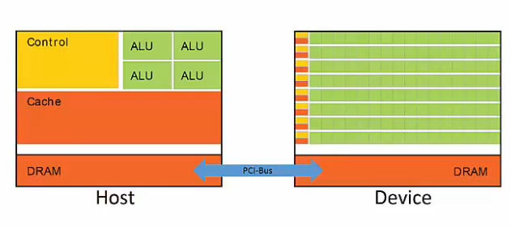
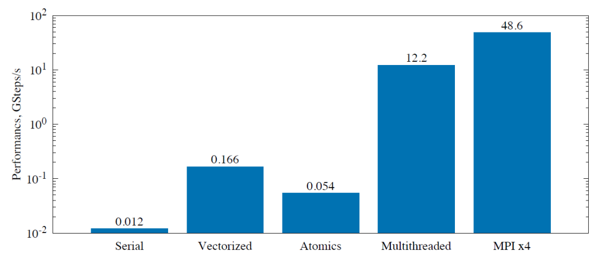

§ Clouds: Parallelism and Distributed Computing
§ Parallelism in CPUs
A CPU executes instructions in stages, the major stages being Fetch, Decode, Execute, Memory, and Write. Parallelism in CPUs can be achieved in many ways, the most basic being through pipelining instructions, where independent instructions are executed together to improve efficiency. This is represented in the waterfall model shown below: A measure of how many of the instructions in a computer program can be executed simultaneously is called Instruction-level parallelism and a processor that executes this kind of parallelism is called a Superscalar Processor. The problem with the above parallelization is the possibility of conflicts that increases with an increase in clock cycles i.e fitting increasingly more instructions together as the pipeline stage continues. Moreover, automatic search for independent instructions requires additional resources.
A measure of how many of the instructions in a computer program can be executed simultaneously is called Instruction-level parallelism and a processor that executes this kind of parallelism is called a Superscalar Processor. The problem with the above parallelization is the possibility of conflicts that increases with an increase in clock cycles i.e fitting increasingly more instructions together as the pipeline stage continues. Moreover, automatic search for independent instructions requires additional resources.
§ Vectorization: Automatic and Explicit
One way to overcome the roadblocks of deeper cycles in CPUs is by exploiting parallelism in data. For example, if the same operation - say addition - needs to be performed on two arrays then this operation can be replaced by a single operation on the whole array. This is called vectorization. Vectorization can be Automatic when the scalar operation is automatically converted by the processor into a parallel one, and Explicit when the user manually implements vectorization. While the obvious benefit of automatic vectorization is the ease of implementation, it does not always work. For example, in the following code auto-vectorization will not work because for each element the addition depends on the previous element and so, the operation cannot be split into chunks.
Vectorization can be Automatic when the scalar operation is automatically converted by the processor into a parallel one, and Explicit when the user manually implements vectorization. While the obvious benefit of automatic vectorization is the ease of implementation, it does not always work. For example, in the following code auto-vectorization will not work because for each element the addition depends on the previous element and so, the operation cannot be split into chunks.
for(int i=1; i < n; i++){
a[i] += a[i-1]
}
for(int i=1; i < n; i++){
a[i] += a[i - N] ;
}
for(int i=1; i < n; i++){
a[i] += a[i+1] ;
}
for(int i=1; i < n; i++){
a[i] += b[i] ;
}
- Works on only innermost loops
- No Vector dependence
- Number of iterations must be known
#pragma omp declare simd double func(double x);
const double dx = a / (double)n ;
double integral = 0.0 ;
#pragma omp simd reduction(+, integral)for (int i=0; i<n; i++){
const double xip2 = dx * ( (double)i + 0.5) ;
const double dI = func(xip2) * dx ;
integral += dI
}
§ Parallelism in Multi-Core CPUs
A multi-core CPU has multiple CPU units sharing the same memory, as shown below: Thus, all the stuff explained above is happening on one vector unit. Since the memory is shared, all the CPU units have the ability to access and modify the contents of the same memory. Thus, they don't need external communication as it is implemented implicitly. However, the relevant issue now becomes the synchronization of these processes since the code written is Multi-Threaded.
Thus, all the stuff explained above is happening on one vector unit. Since the memory is shared, all the CPU units have the ability to access and modify the contents of the same memory. Thus, they don't need external communication as it is implemented implicitly. However, the relevant issue now becomes the synchronization of these processes since the code written is Multi-Threaded.
§ OpenMP
Open Multi-Processing (OpenMP) is a framework for shared-memory programming that allows the distribution of threads across the CPU cores for parallel speedup. It can be included in the CPP programs and easily used through the pragma keyword. For example, in the above Reimann sum OpenMP can be applied as follows: #pragma omp declare simd
double func(double x);
const double dx = a / (double)n ;
double integral = 0.0 ;
#pragma omp parallel for reduction(+: integral)
for (int i=0; i<n; i++){
const double xip2 = dx * ( (double)i + 0.5) ;
const double dI = func(xip2) * dx ;
integral += dI
}

§ Adding More Cores : MIMD
The next step in the trend was to add more cores and make each core perform the same function Thus, more transistors performing specialized tasks allowed splitting independent work over multiple processors, for example in pixel analysis of images. This is called Task Parallelism, and this leads to Multiple Instructions Multiple Data (MIMD) cores. When the work being done by each core is identical, but the data is different, then it is called Single Program Multiple Data (SPMD), a subcategory of MIMD. The most obvious addition that can be done to SPMDs is sharing the fetch and decode parts of processing amongst multiple processes as shown below: This is called Single Instruction Multiple Thread (SIMT) approach, and this is the foundation for GPUs and CUDA.
This is called Single Instruction Multiple Thread (SIMT) approach, and this is the foundation for GPUs and CUDA.
§ GPUs
The SIMT approach forms the core of the Graphical Processing Units (GPUs) where each unit does identical work. Many SIMT threads grouped together make up a GPU core. A GPU has many such cores and a hierarchy can be created as follows:
§ Explaining CUDA
As explained before, the core idea in a GPU is to make multiple smaller cores perform the same function, thus, maximizing throughput. This differentiates GPUs from CPUs, which are designed to minimize latency by implementing advanced control logic and caching. Thus, the focus of GPUs is on the cores that have threads executing the same task in large numbers in a parallel fashion, and these cores occupy the major area of the Silicon Wafer. These Cores are called Kernels. When we run a function on these kernels - called launching a kernel - each function is mapped to a thread of execution on a core. Thus, these programs are massively multi-threaded. Now, the basic way of going about parallel programs is to make the CPU run the normal execution, but make it share its DRAM with the GPU through a PCI Bus, which allows it to parallelize computations that are massive and can be broken down to be done by the GPU
Thus, the CPU is called the Host and the GPU is the Device, and this way of sharing computations is called Heterogeneous Parallel Programming. This is implemented in the NVIDIA GPUs through the CUDA language → which is essentially C with added instructions. The threads execute Kernel instructions in a SIMT manner, and are organized into 3 classes:- Threads → A set of threads is executed by a Kernel.
- Blocks → Threads are grouped into blocks executed on a set of cores.
- Grid → Sets of Blocks → Each kernel Launch is executed as a grid mapped to the entire GPU.
- Grid Dimension → blockDim
- BLock ID → blockIdx
- Thread index → threadIdx.
- 1D → Thread ID == Thread Index
- 2D → Thread ID (x,y) =
- 3D → Thead ID (x, y, z) =
- Decalre pointers to memory
- Allocate memory to the Cuda device →
cudaMalloc (pointer, size of variable type) - Transfer memory to the device →
cudaMemcpy( dst, src, size of variable type, direction ) - Configure the grid and block parameters →
dim3(x,y,z) - Launch Kernel →
<< - Copy the results back to the main execution after completion →
cudaMemcpy( dst, src, size of variable type, direction ) - De-allocate the memory →
cudaFree(pointer)
void main {
// Declare vairables
int *h_c ;// Host
int *d_c ;// Device
//Allocate the memory to device
cudaMalloc( (void**)&d_c, sizeof(int) ) ;
//Set-up the Data transfer
cudaMemcpy (d_C, h_c, sizeof(int), cudaMemcpyHostToDevice ) ;
//Define the Grid and Block cofigs
dim3 grid_size(3,2) ;
dim3 block_size(4,3) ;
//Launch the kernel
kernel<<grid_size, block_size>>>(...) ;
//Copy the data after completion
cudaMemcpy (h_c, d_C, sizeof(int), cudaMemcpyDeviceToHost ) ;
//De-allocate the memory
cudaFree(d_c);
cudaFree(h_c);
}
__global__ keyword and always returns void. The function defined inside the Kernel will always be executed by all the threads.
§ Parallelizing For Loop
In the CPU code, the for loop is written as : void increment_cpu(int *a, int N) {
for ( int i=0; i<N; i++) {
a[i] = a[i] + 1 ;
}
}
__global__ void Kernel( int* a, int N) {
int i = threadIdx.x ;
if ( i < N ){
a[i] = a[i] + 1 ;
}
}
void main {
// Declare vairables
int *h_c[N] = ... ;// Host
int *d_c ;// Device
//Allocate the memory to device
cudaMalloc( (void**)&d_c, sizeof(int) ) ;
//Set-up the Data transfer
cudaMemcpy (d_C, h_c, sizeof(int), cudaMemcpyHostToDevice ) ;
//Define the Grid and Block cofigs
dim3 grid_size(1) ;
dim3 block_size(N) ;
//Launch the kernel
kernel<<grid_size, block_size>>>(d_c, N) ;
//Copy the data after completion
cudaMemcpy (h_c, d_C, sizeof(int), cudaMemcpyDeviceToHost ) ;
//De-allocate the memory
cudaFree(d_c);
cudaFree(h_c);
}
__global__ void MatrixMultiplyKernel(
const float* devM,
const float* devN,
float* devP,
const int width ){
int tx = threadIdx.x;
int ty = threadIdx.y;
// Initialize accumulator to 0
float pValue = 0;
// Multiply and add
for (int k = 0; k < width; k++) {
float m = devM[ty * width + k];
float n = devN[k * width + tx];
pValue += m * n;
}
// Write value to device memory -
// each thread has unique index to write to
devP[ty * width + tx] = pValue;
}
void MatrixMultiplyOnDevice(float* hostP,
const float* hostM,
const float* hostN,
const int width
)
{
int sizeInBytes = width * width * sizeof(float);
float *devM, *devN, *devP;
// Allocate M and N on device
cudaMalloc((void**)&devM, sizeInBytes);
cudaMalloc((void**)&devN, sizeInBytes);
// Allocate P
cudaMalloc((void**)&devP, sizeInBytes);
// Allocate the dimensions
dim3 threads(width, width);
dim3 blocks(1, 1);
// Copy M and N from host to device
cudaMemcpy(devM, hostM, sizeInBytes, cudaMemcpyHostToDevice);
cudaMemcpy(devN, hostN, sizeInBytes, cudaMemcpyHostToDevice);
// Launch the kernel
MatrixMultiplyKernel<<<blocks, threads>>>(devM, devN, devP, width)
// Copy P matrix from device to host
cudaMemcpy(hostP, devP, sizeInBytes, cudaMemcpyDeviceToHost);
// Free allocated memory
cudaFree(devM);
cudaFree(devN);
cudaFree(devP);
}
§ Inter-node parallelism
All that has been discussed previously is specific to parallelism implemented within a node on a cluster and so, is called intra-node parallelism. Since the memory is shared between the CPUs and each of them can have their own caches, synchronized using mutexes and executed in a multi-threaded manner, the previous approach is also called Shared-Memory Parallelism. However, when we speak of computing on several nodes in a cluster, the intra-node sync vanishes since now each node has its own memory which is separate from the other nodes, and so this is called Inter-Node Parallelism. Moreover, now the synchronization cannot happen through the shared memory approach and is implemented by passing messages between nodes → Message Passing Parallelism → and so, the thing that is central here is a deadlock.
§ Message Passing Interface (MPI)
MPI is a library standard defined by a committee of vendors, implementers, and parallel programmers that is used to create parallel programs based on message passing. It is Portable and the De-facto standard platform for the High-Performance Computing (HPC) community. The 6 basic routines in MPI are :-
MPI_Init: Initialize -
MPI_Finalize: Terminate : -
MPI_Comm_size: Determines the number of processes -
MPI_Comm_rank: Determines the label of calling process -
MPI_Send: Sends an unbuffered/blocking message -
MPI_Recv: Receives an unbuffered/blocking message.
1. int MPI_Init(int *argc, char ***argv)
2. int MPI_Finalize()
3. int MPI_Comm_size(MPI_Comm comm, int *size)
4. int MPI_Comm_rank(MPI_Comm comm, int *rank
5. int MPI_Send(void *buf, int count, MPI_Datatype datatype,int dest, int tag, MPI_Comm comm)
6. int MPI_Recv(void *buf, int count, MPI_Datatype datatype, int source, int tag, MPI_Comm comm, MPI_Status *status)
-
MPI_Sendrecv: Send and Recieve in one-shot -
MPI_Bcast: Broadcast same data to all processes in a group -
MPI_Scatter: Send different pieces of an array to different processes through partitioning -
MPI_Gather: Take elements from many processes and gather them to one single process
-
MPI_Reduce: Takes an array of input elements on each process and returns an array of output elements to the root process given a specified operation -
MPI_Allreduce: LikeMPI_Reducebut distribute results to all processes
MPI_Allreduce for numerical Integration and it gives a massive advantage, even compared to the vanilla Multi-threading:

The advantages offered by MPI, clearly, are in the allocation of resources that it allows through explicit and direct communication with the resources. Thus, it is very useful in the scientific domain for HPC applications. However, it has certain weaknesses:- it requires careful tuning of applications
- It is not tolerant to variability
- Dealing with failures is hard → No way to save information for later use